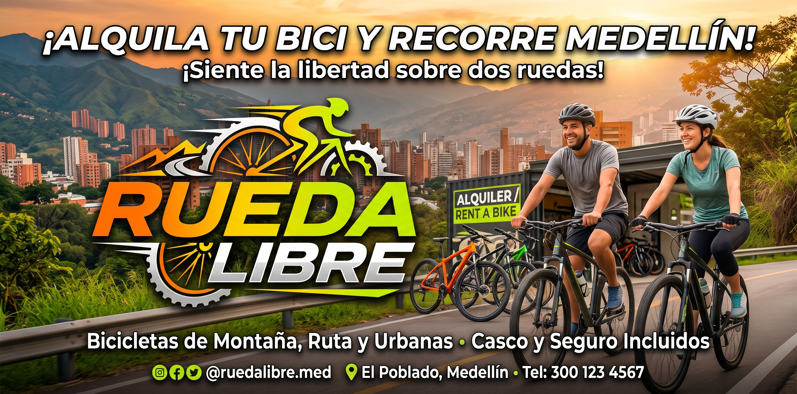
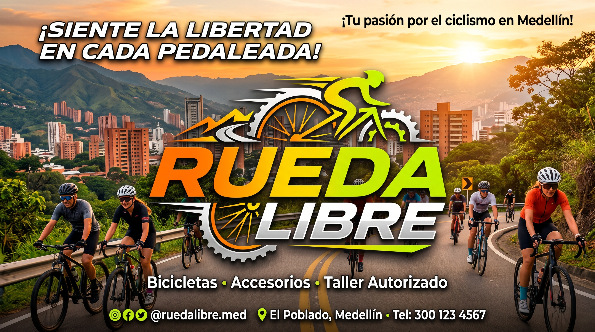
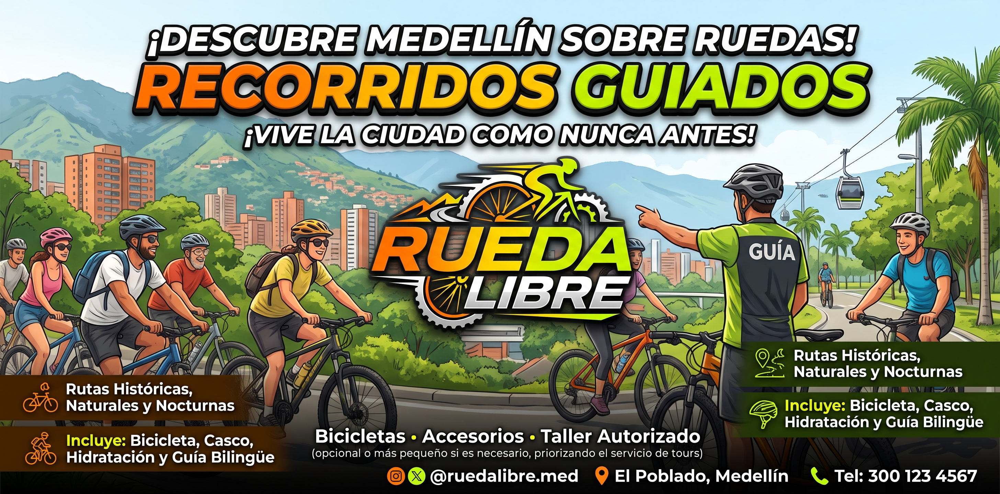
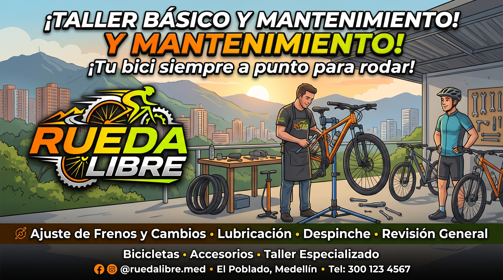
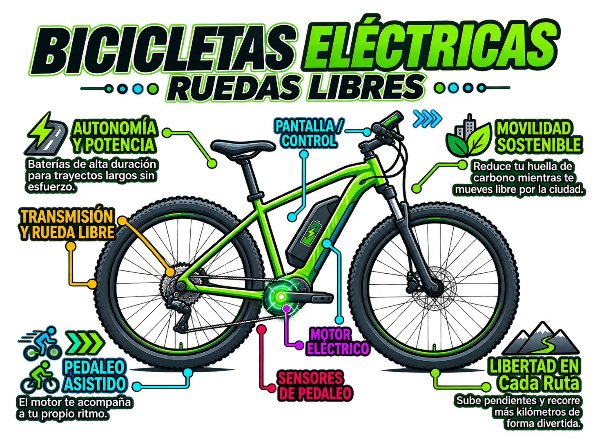
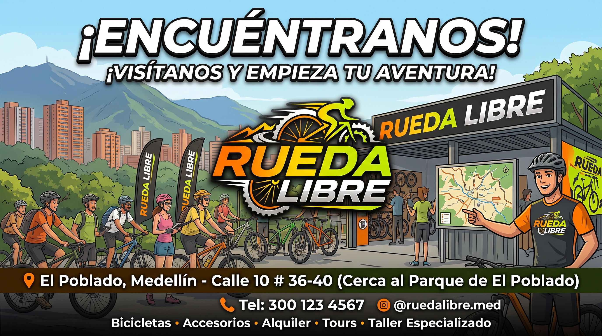

Alquiler de bicicletas
Escoge la bicicleta que mejor se adapte a tu paseo y recorre Medellín a tu ritmo. El alquiler incluye casco y candado para que salgas con lo esencial; la ciudad se siente distinta cuando la recorres sin afán.



Somos un equipo de Medellín que te ayuda a descubrir la ciudad en bicicleta. Ya sea que quieras recorrerla por tu cuenta o con un guía, ven a conocernos en Medellín.
En Rueda Libre creemos que la bicicleta es una forma cercana y divertida de conocer Medellín. Te acompañamos para que elijas una opción cómoda, segura y adecuada para tu plan.
ESTO ES UNA SECCION PARA MOSTRAR DONDE ESTAN LOS ARTICULOS
Escoge la bicicleta que mejor se adapte a tu paseo y recorre Medellín a tu ritmo. El alquiler incluye casco y candado para que salgas con lo esencial; la ciudad se siente distinta cuando la recorres sin afán.

Pedalea en compañía de un guía local que te muestra calles, parques y rincones de Medellín. Es una forma tranquila y cercana de conocer la ciudad mientras compartes el camino con otras personas. Consulta los recorridos guiados y sus precios.

Aprende cuidados sencillos para tu bicicleta, como revisar las llantas, ajustar el sillín y reconocer cuándo necesitas ayuda técnica. Te llevas consejos prácticos para disfrutar más seguridad durante el recorrido.

Recorre más distancia con asistencia eléctrica y disfruta Medellín a tu ritmo. El alquiler incluye casco y candado; una alternativa cómoda para descubrir nuevos lugares. Consulta las tarifas de bicicletas eléctricas.

Elige la bicicleta que mejor se adapte a tu paseo y recorre Medellín a tu ritmo. El alquiler incluye casco y candado para que salgas con lo esencial; la ciudad se siente distinta cuando la recorres sin afán.
| Tipo de bicicleta | 1 hora | Medio día (4 h) | Día completo |
|---|---|---|---|
| $10.000 | $30.000 | $50.000 | |
| $15.000 | $45.000 | $70.000 | |
| $25.000 | $70.000 | $110.000 |
Estamos en Medellín. Escríbenos para conocer el punto de atención y coordinar tu alquiler.

Consultas y reservas: somos@ruedalibre.co